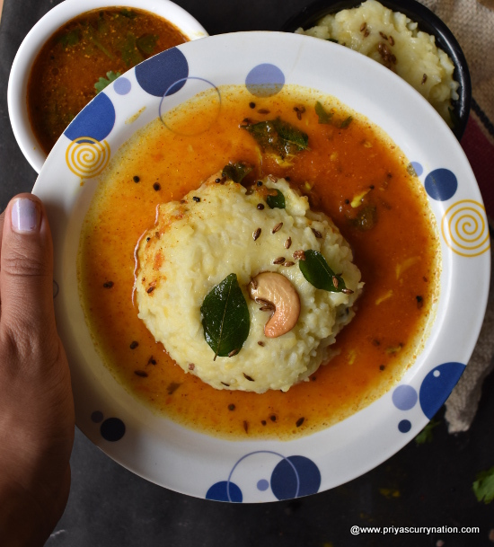

Pongal and Sambar

Description
We never miss having Pongal with Aromatic Sambar every Saturday morning. Indeed it is the most popular and favourite breakfast of many South-Indian Homes.
Sambar is a great breakfast choice as it is very nutritious with Healthy Ingredients. It is protein-packed and also light, and easily digestible (When less ghee is used).
The best part is that this delicious recipe is very simple and can be prepared in a Jiffy. This post will show you how to prepare Pongal and Sambar in a few easy steps with a Pressure Cooker.
Ingredients
For the Pongal
- 1 part Rice
- 1/4 part Moong Dal
- Salt as required
- 3 3/4 cups of Water
For tempering
- Ghee - 2 Tbsp
- Cashew - 10
- Peppercorn - 1 tsp (Crushed or Full as per your choice)
- Cumin - 2 tsp
- Ginger - 1 inch Ginger
- Curry Leaves
- Asafoetida
For the Sambar
- Moong Dal - 1/4 Cup
- Onion - 1 Medium size
- Tomato - 1 Medium Size
- Green Chilli - 1 or 2
- Turmeric powder - 1 tsp
- Water - 1 Cup
- Salt - As required
Steps
To make the pongal
- Wash Rice and Moong Dal and add 3 3/4 Water, required salt and let it soak for 30 minutes.
- Later, Pressure cook for 5 Whistles. Open when Pressure settles and Mash the contents slightly.
- In a pan, Heat 2 Tbsp Ghee and Roast the Cashews till they turn golden brown.
- Now, add the rest: Peppercorn, Cumin, Curry leaves and Ginger.
- Saute for a minute and pour the Tempering over the Rice and Dal mixture. Mix well. The Pongal is ready!
To make the sambar
Add all the ingredients in a pressure cooker and cook for 3 Whistles. Open when pressure Subsides. Sambar is ready!
Go Back